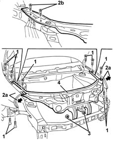

7210A15 R.R. HEADLAMP HOUSING/FRONT WING CROSSMEMBER
- Path
- Procedures > 72 PANELS AND FRAME > 7210 REMOVING REFITTING > 7210A structural elements (front part) > 7210A15 R.R. HEADLAMP HOUSING/FRONT WING CROSSMEMBER
- Kind
- repair procedure (removal / refitting; the operation number is the code)
- Applies to
- all engines; all production periods
- Interactive page
- https://sloeber94.github.io/elrnDB-lYpsln/en/#/2429713
Applies to: all engines; all production periods
 Removing
Removing
 Refitting
RefittingLift the bonnet lid.
1. Undo the wing fixing bolts.
2. Extend wings (2a) slightly and unscrew bolts (2b) from both sides of the vehicle.
3. Unscrew the nuts.
4. Remove the crossmember.

Applies to: all engines; all production periods
Refitting
RemovingCheck that the crossmember is not damaged.
Position the beam and tighten the bolts.
 | Fastening | Component | Ø | Value (daNm) |
|---|---|---|---|---|
- | Bolt | FRONT BEAM WITH HEADLAMP SEATS | M8 | 1.7 |
Position the wings and do up the bolts.
| Fastening | Component | Ø | Value (daNm) |
|---|---|---|---|---|
- | Bolt | FRONT WING. BODYSHELL | M6 | 0.8 |
Check the wings and beam are aligned.